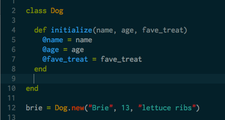
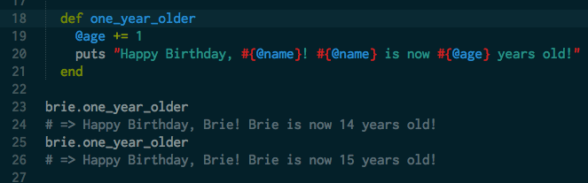
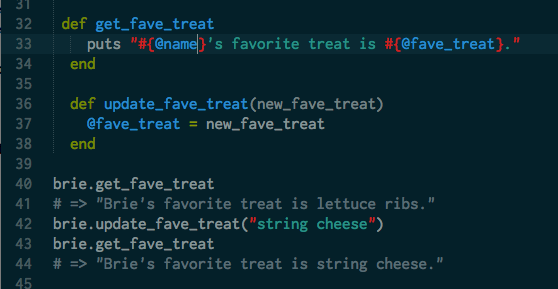

MEG MAKES
Drinking from the web development fire hose at Dev Bootcamp.
Tech talk: Building a new Ruby class.
September 5, 2014
As I touched on in last week's technical post, Ruby is an object oriented language and each object belongs to a class. Classes are like a blueprint for objects - they group together attributes and actions (or methods) allowing you to easily create a large number of new objects that behave in the same way.
To expand further on how classes work, let's walk through the process of creating our own class - a class of dogs called Dog. To make each dog object we will need it's name, age, and favorite treat. These pieces of information are each required to make a new Dog object and are called arguments. We initiate the class definition with the word class and then the name of our class (Dog in this case) and close the class definition with the word end, with all information about the class and the actions its objects can take going in between.
Above we create brie, an instance of the Dog class (and also my parents' very adorable, very old yellow lab). You can see that each time we want to create a new instance we write Dog.new and then include the three arguments (name, age, and favorite treat) in the parentheses that follow. Inside the class definition we define the initialize method. While the .new creates the new instance of the class, the initialize method gives the instance all of it's unique characteristics by assigning instance variables to each of the arguments. Instance variables begin with an @ and represent information specific to that instance of the class.
Now that we have created brie, our first instance of the Dog class, let's give her something to do! To start, we can define a method in Dog that will age the Dog object that calls it by one year:
one_year_older is what is called an instance method. This means that it is a method that can be called on any instance of the Dog class but it cannot be called on non-Dog objects - the computer won't know what to do if you try that and will give you an error. In one_year_older we increment the instance variable @age by one and then print out a short message with Brie's age. Calling the one_year_older method on brie a second time increments her age by one year again.
What if Brie has discovered that while lettuce ribs are great, they aren't nearly as delicious as string cheese? We can write another method that will allow us to to update the @fave_treat variable:
First we define a method get_fave_treat that simply prints out the name of Brie's favorite treat. We then define a second method update_fave_treat that takes one argument: new_fave_treat. In order for the computer to update Brie's favorite treat, it needs to know what her new favorite treat is. You can see both methods in action above. We first call the get_fave_treat method to see that Brie's current favorite treat is lettuce ribs. We then call the update_fave_treat method to update her favorite treat to string cheese. Finally, we call the get_fave_treat method again to show that we have successfully updated Brie's favorite treat.
There's so much more we could do with the Dog class - like create more Dog object so that Brie has friends to play with, add additional variables that keep track of more information about Brie, and write additional methods that interact with the Dog objects. Can you create a Dog object for your own dog (or the dog you wish you had)?